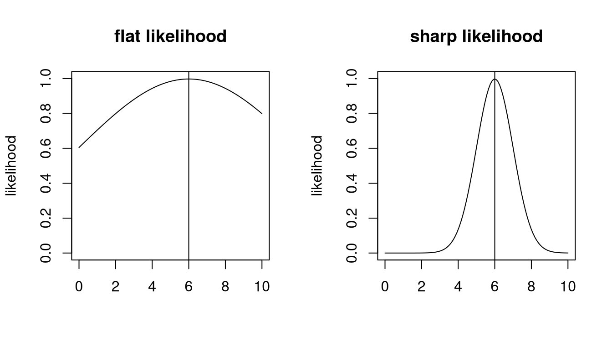

9 Observed Fisher information
9.1 Definition of the observed Fisher information
Visual inspection of the log-likelihood function (e.g. Figure 9.1) suggests that it contains more information about the parameter \(\boldsymbol \theta\) than just the location of the maximum point at \(\hat{\boldsymbol \theta}_{ML}\).
In particular, in a regular model the curvature of the log-likelihood function at the MLE seems to be related to the accuracy of \(\hat{\boldsymbol \theta}_{ML}\): if the likelihood surface is flat near the maximum (low curvature) then if is more difficult to find the optimal parameter (also numerically). Conversely, if the likelihood surface is sharply peaked (strong curvature) then the maximum point is well defined.
The curvature can be quantified by the second-order derivatives (Hessian matrix) of the log-likelihood function.
Accordingly, the observed Fisher information (matrix) is defined as the negative Hessian of the log-likelihood function \(\ell_n(\boldsymbol \theta)\) at the MLE \(\hat{\boldsymbol \theta}_{ML}\): \[ {\boldsymbol J_n}(\hat{\boldsymbol \theta}_{ML}) = - \boldsymbol H(\hat{\boldsymbol \theta}_{ML} ) = -\nabla \nabla^T \ell_n(\hat{\boldsymbol \theta}_{ML}) \]
Sometimes this is simply called the “observed information”. To avoid confusion with the expected Fisher information \[ \boldsymbol I^{\text{Fisher}}(\boldsymbol \theta) = -\text{E}_{P(\boldsymbol \theta)} \left( \nabla \nabla^T \log p(x|\boldsymbol \theta)\right) \] introduced earlier it is necessary to always use the qualifier “observed” when referring to \({\boldsymbol J_n}(\hat{\boldsymbol \theta}_{ML})\).
We will see in more detail later that the observed Fisher information plays an important role at quantifying the uncertainty of a maximum likelihood estimate.
Transformation properties
As a consequence of the invariance of the score function and curvature function the observed Fisher information is invariant against transformations of the sample space. This is the same invariance also shown by the expected Fisher information and by the KL divergence.
\(\color{Red} \blacktriangleright\) Like the expected Fisher information the observed Fisher information (as a Hessian matrix) transforms covariantly under change of model parameters — see Section 5.1.5.
Relationship between observed and expected Fisher information
The observed Fisher information \(\boldsymbol J_n(\hat{\boldsymbol \theta}_{ML})\) and the expected Fisher information \(\boldsymbol I^{\text{Fisher}}(\boldsymbol \theta)\) are related but also two clearly different entities.
Curvature based:
- Both types of Fisher information are based on computing second order derivatives (Hessian matrix), thus both are based on the curvature of a function.
Transformation properties:
Both quantities are invariant against changes of the parametrisation of the sample space.
\(\color{Red} \blacktriangleright\) Both transform covariantly when changing the parameter of the distribution.
Data-based vs. model only:
The observed Fisher information is computed from the log-likelihood function. Therefore it takes both the model and the observed data \(D\) into account and explicitly depends on the sample size \(n\). It contains estimates of the parameters but not the parameters themselves. While the curvature of the log-likelihood function may be computed for any point of the log-likelihood function the observed Fisher information specifically refers to the curvature at the MLE \(\hat{\boldsymbol \theta}_{ML}\). It is linked to the (asymptotic) variance of the MLE (see the examples and as will be discussed in more detail later).
In contrast, the expected Fisher information is derived directly from the log-density of the model family. It does not depend on the observed data, and thus does not depend on sample size. It is a property of the model family \(P(\boldsymbol \theta)\) alone. It makes sense and can be computed at any \(\boldsymbol \theta\). It describes the local geometry of the space of the model family, and is the local approximation of KL information.
Large sample equivalence:
- Assume that for large sample size \(n\) the MLE converges to \(\hat{\boldsymbol \theta}_{ML} \rightarrow \boldsymbol \theta_0\). It follows from the construction of the observed Fisher information and the law of large numbers that asymptotically for large sample size \(\boldsymbol J_n(\hat{\boldsymbol \theta}_{ML}) \rightarrow n \boldsymbol I^{\text{Fisher}}( \boldsymbol \theta_0 )\) (i.e. the expected Fisher information for a set of iid random variables, see Section 5.1.3.
\(\color{Red} \blacktriangleright\) Finite sample equivalence for exponential families:
- In a very important class of models, namely for exponential families, we find that \(\boldsymbol J_n(\hat{\boldsymbol \theta}_{ML}) = n \boldsymbol I^{\text{Fisher}}( \hat{\boldsymbol \theta}_{ML} )\) is valid also for finite sample size \(n\). This can be directly seen from the special instances of exponential families such as the Bernoulli distribution (Example 5.1 and Example 9.1), the normal distribution with one parameter (Example 5.3 and Example 9.2), the normal distribution with two parameters (Example 5.4 and Example 9.4) and the categorical distribution (Example 5.5 and Example 9.5).
- However, exponential families are an exception. In a general model \(\boldsymbol J_n(\hat{\boldsymbol \theta}_{ML}) \neq n \boldsymbol I^{\text{Fisher}}( \hat{\boldsymbol \theta}_{ML} )\) for finite sample size \(n\). As an example consider the location-scale \(t\)-distribution \(\text{$t_{\nu}$}(\mu, \tau^2)\) with unknown median parameter \(\mu\) and known scale parameter \(\tau^2\) and given degree of freedom \(\nu\). This is not an exponential family model (unless \(\nu \rightarrow \infty\) when it becomes the normal distribution). It can be shown that the expected Fisher information is \(I^{\text{Fisher}}(\mu )=\frac{\nu+1}{\nu+3} \frac{1}{\tau^2}\) but the observed Fisher information \(J_n(\hat{\mu}_{ML}) \neq n \frac{\nu+1}{\nu+3} \frac{1}{\tau^2}\) with a maximum likelihood estimate \(\hat{\mu}_{ML}\) that can only be computed numerically with no closed form available.
9.2 Observed Fisher information examples
Models with a single parameter
Example 9.1 Observed Fisher information for the Bernoulli model \(\text{Ber}(\theta)\):
We continue Example 8.1. The second derivative of the log-likelihood function is \[ H_n(\theta) = \frac{d S_n(\theta)}{d\theta}=- n \left( \frac{ \bar{x} }{\theta^2} + \frac{1 - \bar{x} }{(1-\theta)^2} \right) \] The observed Fisher information is therefore \[ \begin{split} J_n(\hat{\theta}_{ML}) &= -H( \hat{\theta}_{ML} )\\ & = n \left(\frac{ \bar{x} }{\hat{\theta}_{ML}^2} + \frac{ 1 - \bar{x} }{ (1-\hat{\theta}_{ML})^2 } \right) \\ & = n \left(\frac{1}{\hat{\theta}_{ML}} + \frac{1}{1-\hat{\theta}_{ML}} \right) \\ &= \frac{n}{\hat{\theta}_{ML} (1-\hat{\theta}_{ML})} \\ \end{split} \]
The inverse of the observed Fisher information is: \[J_n(\hat{\theta}_{ML})^{-1}=\frac{\hat{\theta}_{ML}(1-\hat{\theta}_{ML})}{n}\]
Compare this with \(\text{Var}\left(\frac{x}{n}\right) = \frac{\theta(1-\theta)}{n}\) for \(x \sim \text{Bin}(n, \theta)\).
Example 9.2 Observed Fisher information for the normal distribution with unknown mean and known variance:
This is the continuation of Example 8.2. The second derivative of the log-likelihood function is \[ H_n(\mu) = \frac{d S_n(\mu)}{d\mu}=- \frac{n}{\sigma^2} \] The observed Fisher information at the MLE is therefore \[ J_n(\hat{\mu}_{ML}) = -H_n(\hat{\mu}_{ML}) = \frac{n}{\sigma^2} \] and the inverse of the observed Fisher information is \[ J_n(\hat{\mu}_{ML})^{-1} = \frac{\sigma^2}{n} \]
For \(x_i \sim N(\mu, \sigma^2)\) we have \(\text{Var}(x_i) = \sigma^2\) and hence \(\text{Var}(\bar{x}) = \sigma^2/n\), which is equal to the inverse observed Fisher information.
Example 9.3 Observed Fisher information for the normal distribution with known mean and unknown variance:
This is the continuation of Example 8.3. The second derivative of the log-likelihood function is \[ H_n(\sigma^2) = \frac{dS_n(\sigma^2)}{d\sigma^2} = -\frac{n}{2\sigma^4} \left(\frac{2}{\sigma^2} \overline{(x-\mu)^2} -1\right) \] Correspondingly, the observed Fisher information is \[ J_n(\widehat{\sigma^2}_{ML}) = -H_n(\widehat{\sigma^2}_{ML}) = \frac{n}{2} \left(\widehat{\sigma^2}_{ML} \right)^{-2} \] and its inverse is \[ J_n(\widehat{\sigma^2}_{ML})^{-1} = \frac{2}{n} \left(\widehat{\sigma^2}_{ML} \right)^{2} \]
With \(x_i \sim N(\mu, \sigma^2)\) the empirical variance \(\widehat{\sigma^2}_{ML}\) follows a one-dimensional Wishart distribution \[ \widehat{\sigma^2}_{\text{ML}} \sim \text{Wis}\left(s^2 = \frac{\sigma^2}{n}, k=n-1\right) \] (see Section A.8) and hence has variance \(\text{Var}(\widehat{\sigma^2}_{ML}) = \frac{n-1}{n} \, \frac{2 \sigma ^4}{n}\). For large \(n\) this becomes \(\text{Var}\left(\widehat{\sigma^2}_{ML}\right)\overset{a}{=} \frac{2}{n} \left(\sigma^2\right)^2\) which is (apart from the “hat”) the inverse of the observed Fisher information.
Models with multiple parameters
Example 9.4 Observed Fisher information for the normal distribution with mean and variance parameter:
This is the continuation of Example 8.5.
The Hessian matrix of the log-likelihood function is \[ \begin{split} \boldsymbol H_n(\mu,\sigma^2) &= \nabla \nabla^T \ell_n(\mu,\sigma^2)\\ &= \begin{pmatrix} - \frac{n}{\sigma^2}& -\frac{n}{\sigma^4} (\bar{x} -\mu)\\ - \frac{n}{\sigma^4} (\bar{x} -\mu) & \frac{n}{2\sigma^4}-\frac{n}{\sigma^6} \left(\overline{x^2} - 2 \mu \bar{x} + \mu^2\right) \\ \end{pmatrix} \end{split} \] The negative Hessian at the MLE, i.e. at \(\hat{\mu}_{ML} = \bar{x}\) and \(\widehat{\sigma^2}_{ML} = \overline{x^2} -\bar{x}^2\), yields the observed Fisher information matrix: \[ \begin{split} \boldsymbol J_n(\hat{\mu}_{ML},\widehat{\sigma^2}_{ML}) &= -\boldsymbol H( \hat{\mu}_{ML},\widehat{\sigma^2}_{ML} ) \\ &= \begin{pmatrix} \frac{n}{\widehat{\sigma^2}_{ML}}&0 \\ 0 & \frac{n}{2(\widehat{\sigma^2}_{ML})^2} \end{pmatrix} \end{split} \] The observed Fisher information matrix is diagonal with positive entries. Therefore its eigenvalues are all positive as required for a maximum, because for a diagonal matrix the eigenvalues are simply the the entries on the diagonal.
The inverse of the observed Fisher information matrix is \[ \boldsymbol J_n(\hat{\mu}_{ML},\widehat{\sigma^2}_{ML})^{-1} = \begin{pmatrix} \frac{\widehat{\sigma^2}_{ML}}{n}& 0\\ 0 & \frac{2(\widehat{\sigma^2}_{ML})^2}{n} \end{pmatrix} \]
Example 9.5 \(\color{Red} \blacktriangleright\) Observed Fisher information of the categorical distribution:
We continue Example 8.7. We first need to compute the negative Hessian matrix of the log likelihood function \(- \nabla \nabla^T \ell_n(\pi_1, \ldots, \pi_{K-1} )\) and then evaluate it at the MLEs \(\hat{\pi}_1^{ML}, \ldots, \hat{\pi}_{K-1}^{ML}\).
The diagonal entries of the Hessian matrix (with \(i=1, \ldots, K-1\)) are \[ \frac{\partial^2}{\partial \pi_i^2} \ell_n(\pi_1, \ldots, \pi_{K-1} ) = -n \left( \frac{\bar{x}_i}{\pi_i^2} +\frac{\bar{x}_K}{\pi_K^2}\right) \] and its off-diagonal entries are (with \(j=1, \ldots, K-1\)) \[ \frac{\partial^2}{\partial \pi_i \partial \pi_j} \ell_n(\pi_1, \ldots, \pi_{K-1} ) = -\frac{n \bar{x}_K}{\pi_K^2} \] Thus, the observed Fisher information matrix at the MLE for a categorical distribution is the \(K-1 \times K-1\) dimensional matrix \[ \begin{split} \boldsymbol J_n(\hat{\pi}_{1}^{ML}, \ldots, \hat{\pi}_{K-1}^{ML} ) &= n \begin{pmatrix} \frac{1}{\hat{\pi}_1^{ML}} + \frac{1}{\hat{\pi}_K^{ML}} & \cdots & \frac{1}{\hat{\pi}_K^{ML}} \\ \vdots & \ddots & \vdots \\ \frac{1}{\hat{\pi}_K^{ML}} & \cdots & \frac{1}{\hat{\pi}_{K-1}^{ML}} + \frac{1}{\hat{\pi}_K^{ML}} \\ \end{pmatrix} \\ & = n \text{Diag}\left( \frac{1}{\hat{\pi}_1^{ML}} , \ldots, \frac{1}{\hat{\pi}_{K-1}^{ML}} \right) + \frac{n}{\hat{\pi}_K^{ML}}\mathbf 1\\ \end{split} \]
Note that the observed Fisher information matrix is the sum of a positive definite matrix (the first diagonal matrix) and a positive semi-definite matrix (the second matrix which is a multiple of \(\mathbf 1\)), hence it is positive definite. Hence, the Hessian at the MLE is negative definite as required for a maximum.
For \(K=2\) (cf. Example 9.1) this reduces to the observed Fisher information of a Bernoulli variable \[ \begin{split} J_n(\hat{\theta}_{ML}) & = n \left(\frac{1}{\hat{\theta}_{ML}} + \frac{1}{1-\hat{\theta}_{ML}} \right) \\ &= \frac{n}{\hat{\theta}_{ML} (1-\hat{\theta}_{ML})} \\ \end{split} \]
The inverse of the observed Fisher information is: \[ \boldsymbol J_n(\hat{\pi}_{1}^{ML}, \ldots, \hat{\pi}_{K-1}^{ML} )^{-1} = \frac{1}{n} \begin{pmatrix} \hat{\pi}_1^{ML} (1- \hat{\pi}_1^{ML} ) & \cdots & - \hat{\pi}_{1}^{ML} \hat{\pi}_{K-1}^{ML} \\ \vdots & \ddots & \vdots \\ - \hat{\pi}_{K-1}^{ML} \hat{\pi}_{1}^{ML} & \cdots & \hat{\pi}_{K-1}^{ML} (1- \hat{\pi}_{K-1}^{ML} ) \\ \end{pmatrix} \]
To show that this is indeed the inverse we use the Woodbury matrix identity
\[ (\boldsymbol A+ \boldsymbol U\boldsymbol B\boldsymbol V)^{-1} = \boldsymbol A^{-1} - \boldsymbol A^{-1} \boldsymbol U(\boldsymbol B^{-1} + \boldsymbol V\boldsymbol A^{-1} \boldsymbol U)^{-1} \boldsymbol V\boldsymbol A^{-1} \] with
- \(B=1\),
- \(\boldsymbol u= (\pi_1, \ldots, \pi_{K-1})^T\),
- \(\boldsymbol v=-\boldsymbol u^T\),
- \(\boldsymbol A= \text{Diag}(\boldsymbol u)\) and its inverse \(\boldsymbol A^{-1} = \text{Diag}(\pi_1^{-1}, \ldots, \pi_{K-1}^{-1})\).
Then \(\boldsymbol A^{-1} \boldsymbol u= \mathbf 1_{K-1}\) and \(1-\boldsymbol u^T \boldsymbol A^{-1} \boldsymbol u= \pi_K\). With this \[ \boldsymbol J_n(\hat{\pi}_{1}^{ML}, \ldots, \hat{\pi}_{K-1}^{ML} )^{-1} = \frac{1}{n} \left( \boldsymbol A- \boldsymbol u\boldsymbol u^T \right) \] and \[ \boldsymbol J_n(\hat{\pi}_{1}^{ML}, \ldots, \hat{\pi}_{K-1}^{ML} ) = n \left( \boldsymbol A^{-1} + \frac{1}{\pi_K} \mathbf 1_{K-1 \times K-1} \right) \]